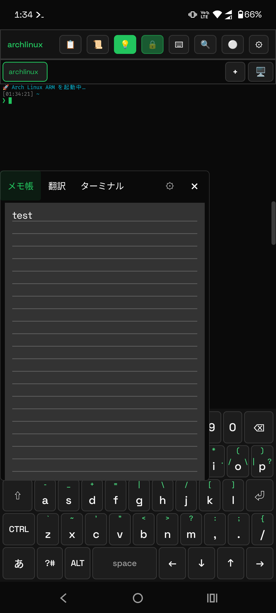
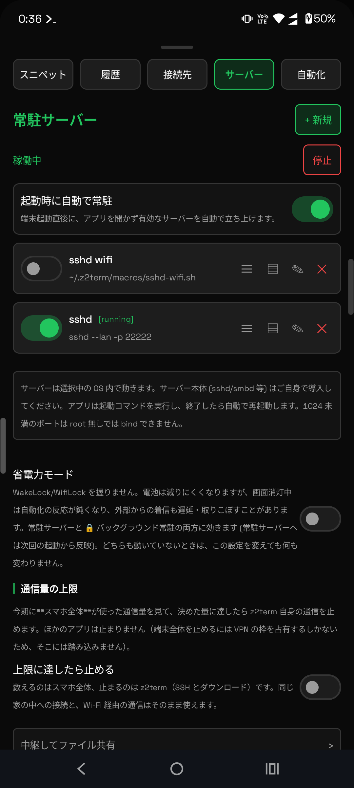

使いこなしガイド / 4. エッジパネル・タイル・アイコン
書いたマクロを、アプリを開かずに実行できる場所へ置きます。 画面の端のパネル、クイック設定のタイル、常駐サーバーの 3 つです。

edge-panel。
カードを上から順に押すと、重ねて表示の許可 → 見本のパネル作り → パネルを ON まで進みます。
見本は、端のバーから開くアプリ一覧です。z2-icon の絵から選べます。| したいこと | やりかた |
|---|---|
| メモ・翻訳・ターミナルの見本がほしい | 案内の edge-workspace。バー 1 本から 3 つのタブを開きます |
| タブを行き来する | メニューの上でスワイプ（縦並びなら左右、横並びなら上下） |
| バーの上下スワイプでスクロールしたい | ユーザー補助の「z2term Android 操作」が要ります |
| 端末から作る | z2-edge panel / z2-edge set |
枠は 12 個。中身に合わせてアイコンが自動で付きます。
z2-tile set 1 backup.sh z2-tile set 2 'remind.sh ask' -l リマインド z2-tile set 3 z2-torch on --off z2-torch off -l ライトマクロの名前でも、そのまま走らせるコマンドでも構いません（
-l は表示名）。| したいこと | 書き方 |
|---|---|
| 入と切が別コマンド | --off を付けると 1 枚で交互に走ります（ライトなど） |
| マクロに引数を渡す | z2-tile set 2 'remind.sh ask' のようにクォートで囲みます |
| 一覧・取り消し | z2-tile list / z2-tile clear 3（all で全部） |
| 押しても無反応 | ~/.z2term/tile/run.log に理由が出ています |
タイルとステータスバーのアイコンは、24×24 のドット絵に差し替えられます。
絵といってもただのテキストで、# と . で描きます。
まず、タイルに置いた中身から自動で絵が付きます。
remind.sh なら時計、battery-alert.sh なら電池、
z2-screen keepon なら月、といった具合です。同梱のマクロはすべて何かしら付きます。
z2-icon pick 1 # 一覧から番号で選んで枠 1 へ z2-icon edit 1 # $EDITOR で描く / 描き直す z2-icon save 1 わたしの顔 # その絵に名前を付けて一覧に足す z2-icon sample 5 わたしの顔 # 枠 5 にも同じ絵を入れる z2-icon list # どの枠に何の絵が入っているか z2-icon list -p # 絵つきで確かめる z2-icon auto 1 # 自動の選択に戻す z2-icon clear notify # 既定のアイコンへ戻す
| 覚えておくこと | なぜ |
|---|---|
| 自分で入れた絵は自動で上書きされません | 一度 z2-icon で入れたら、以後そこは自動で触りません（戻すのは auto） |
| 色は選べません | Android がアイコンを単色で塗り直すため。決まるのは形だけです |
| 細かい描き込みは消えます | 実際の表示が 24px 前後なので。z2-icon show で見えるものがそのまま出ます |
| 変えられない場所が 2 つ | クイック設定の編集画面のアイコンと、ランチャーのアイコン（Android が導入時に固定します） |
notify を差し替えると、このアプリの通知すべてがその絵になります。

sshd・Web サーバー・同期デーモンなど、動かし続けたいものを登録します。
「起動時に自動で常駐」を ON にすると、アプリを開かなくても端末の起動直後から立ち上がります。
sshd など）は、あらかじめ端末で導入しておいてください。